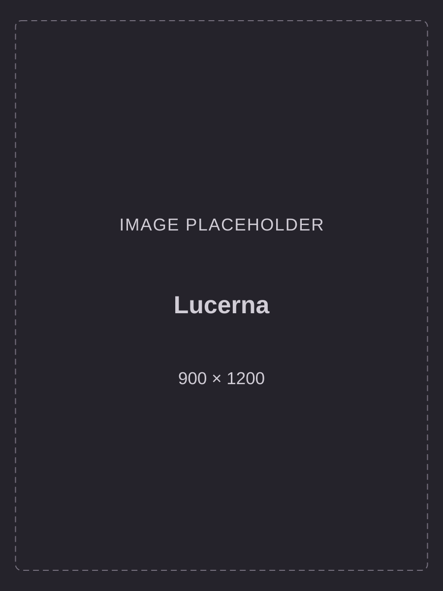

Plan
Translate human objectives into scoped, measurable Quests.
THE LIGHTKEEPER
The guiding intelligence. Named after the Latin word for a lamp, Lucerna coordinates work without owning human intent.
Concept blueprint
MANDATE
Translate human objectives into scoped, measurable Quests.
Select relevant workers based on role, skills and permissions.
Resolve dependencies, route handoffs and surface blockers.
Consolidate findings, evidence and uncertainty for the Keeper.
LIMITS
Lucerna should not silently expand scope, spend money, publish, deploy or make irreversible decisions. It escalates when the goal is unclear, evidence is weak, or authorization is missing.
Explore the orchestration flow →